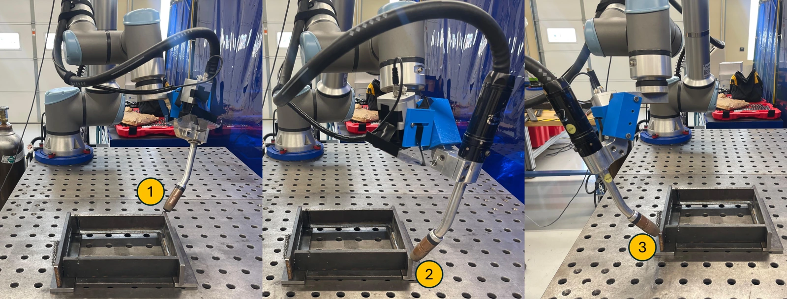
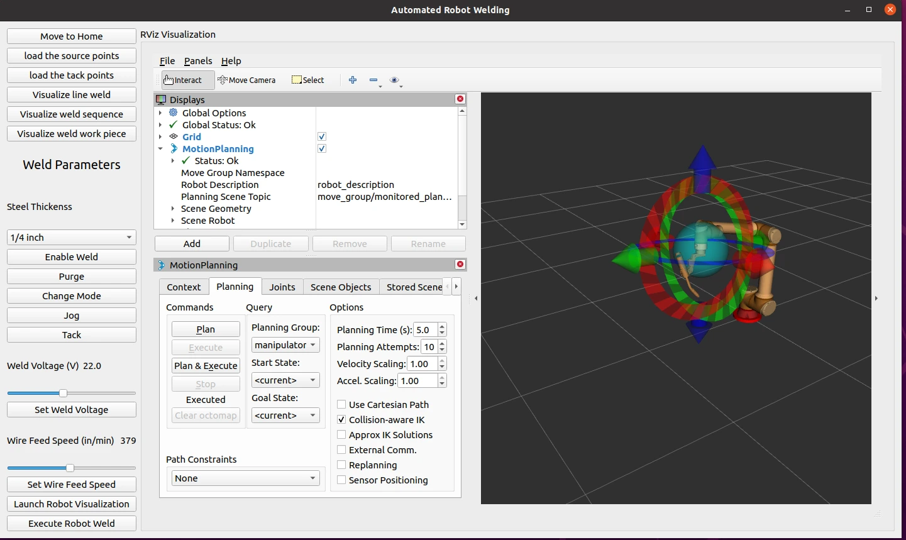
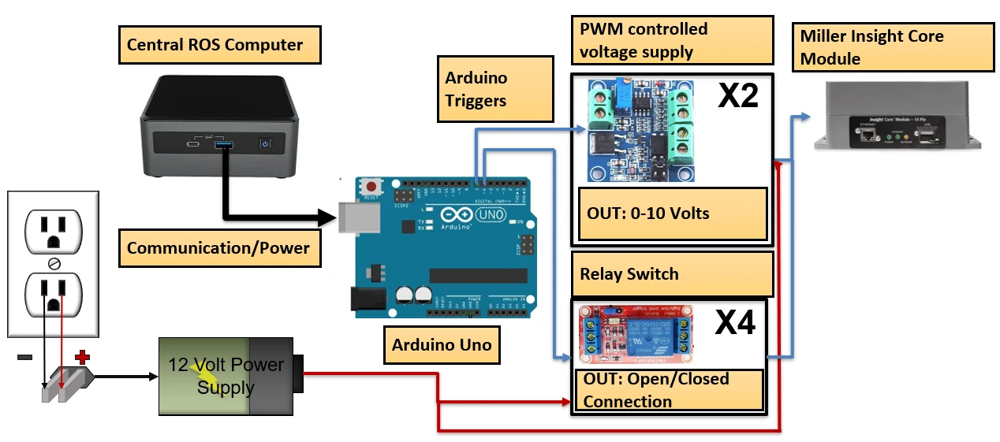
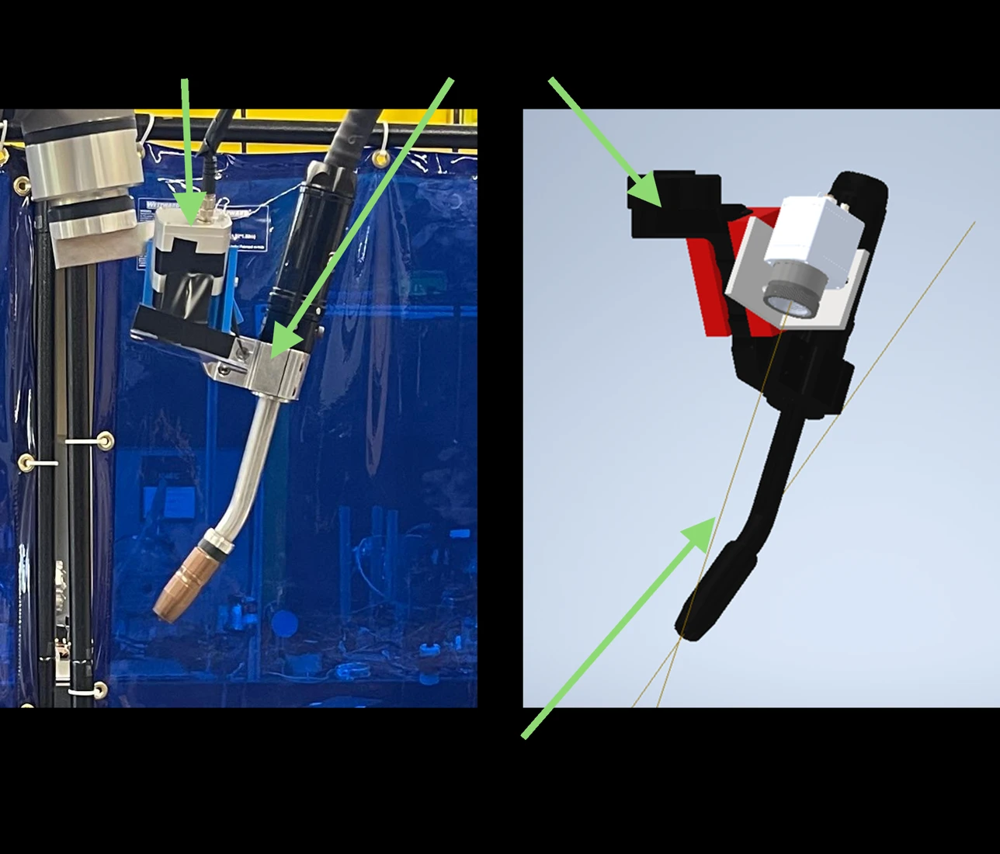
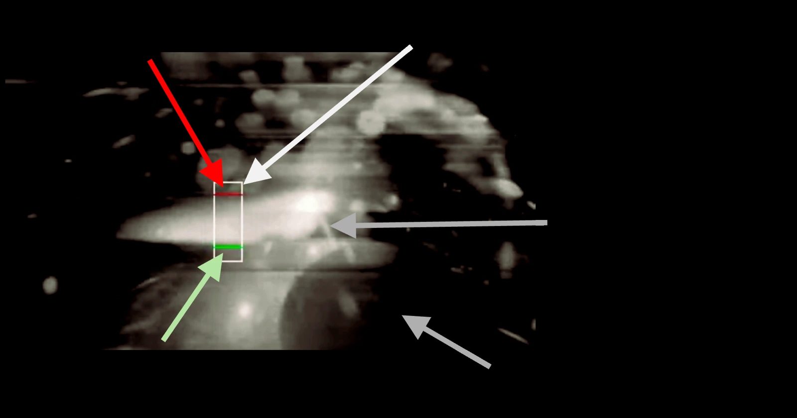

Robotic Automation · Motion planning
Robotic welding automation
A UR10e and Miller pulsed-MIG welding platform that connects workpiece registration, weld-path planning, and coordinated robot execution through a Python/ROS interface.

The problem
Automating a weld requires more than moving a torch between two points. The CAD model has to agree with the physical workpiece, the torch has to maintain its orientation and travel speed, and the welding equipment has to be triggered in step with the robot's motion.
Engineering work
Equipment and operator interface
Built a Python/PyQt5/ROS interface for weld setup and execution. Integrated Arduino PWM and relay control with the Miller welder for arc voltage, wire feed, and weld triggering, and brought registration and RViz into the operator workflow.
CAD-to-robot registration
Used three torch-probed reference points with Kabsch alignment and ICP refinement to establish the workpiece-to-robot transform. This connected CAD geometry to the physical setup without external metrology.
Path generation and robot motion
Generated weld paths from STL edges and surface normals with a 45° torch tilt. Developed the planning workflow around inverse kinematics, wrist-limit handling, and joint continuity. The GUI execution pipeline uses MoveIt planning, angle unwrapping, and distance-based trajectory timing to sequence approach, welding, retreat, and reorientation.
Execution and motion checks
Coordinated weld triggering with robot execution and added end-effector logging, joint-continuity checks, and checks for abrupt joint motion and jerk. The operator interface connects planned motion to the robot and welding equipment.
Closed-loop weld-pool regulation
Integrated Optris PI 05M infrared monitoring and used bead-height and calibrated temperature feedback for closed-loop regulation of torch travel speed and arc voltage. This connects the measured weld-pool state to the robot-motion and welding-parameter commands.
- Probe reference points
- Register CAD
- Generate torch path
- Solve & time motion
- Execute & monitor
Results & scope
The project brought equipment control, CAD registration, trajectory generation, execution monitoring, and closed-loop weld-pool regulation into one workflow. The original report captures the system architecture and sensing setup; the closed-loop work was completed subsequently.
Evaluation criteria and literature context
The relevant comparison criteria are error relative to the desired weld geometry and thermal state, transient response when the reference or process conditions change, and agreement between in-process estimates and post-weld measurements. These criteria provide a framework for evaluating the closed loop; the references below are literature context, not numerical results from this system.
A closer look










Watch the system
Opens the video on Google Drive in a new tab.
Read more
Original images and system architecture from the project report. The report predates the completed closed-loop work described here. The proprietary control source is not distributed in this portfolio.